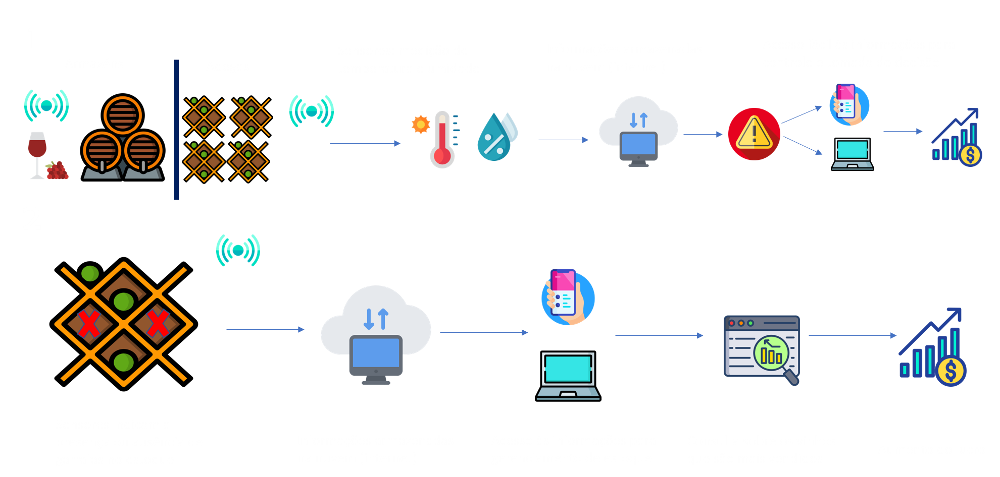

O que fazemos?
Utilizamos sensores de temperatura e umidade em adegas e vinícolas para controle de qualidade do vinho. O sensor fará a medição de valores de temperatura e umidade em diferentes momentos do dia, funcionando 24/7. Ele coletará os dados medidos e alimentará em tempo real um banco de dados, que fará a comparação dos valores coletados com os diferentes momentos do dia. Após a medição e avaliação das informações, um plano de controle será traçado para que possa reduzir (ou mesmo eliminar) o desperdício de mercadoria.
Como a Winetec funciona?
